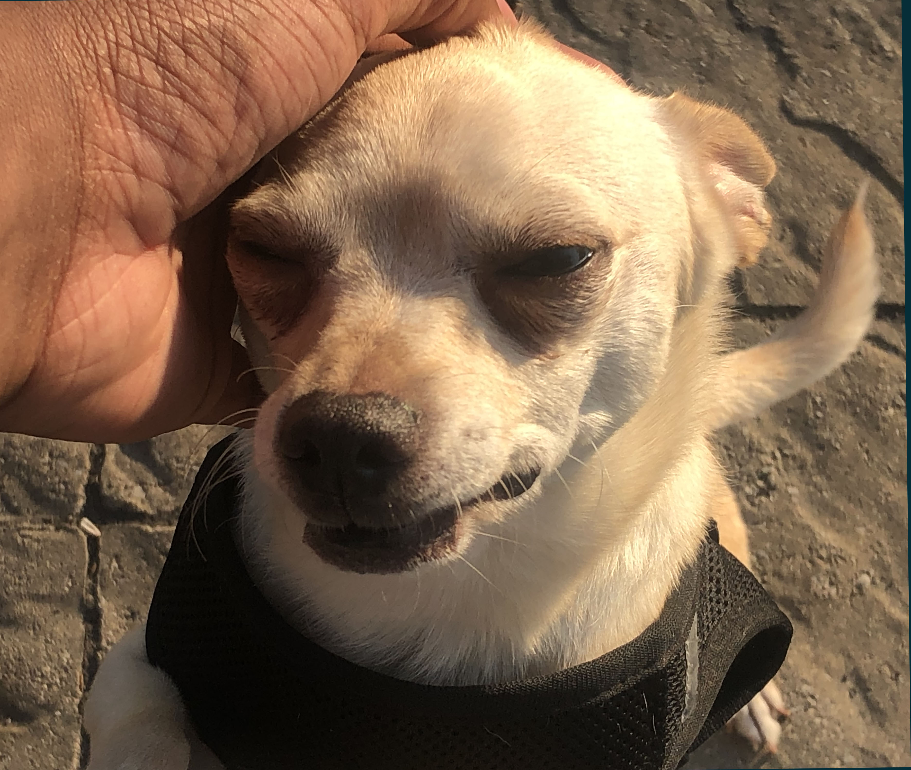

About Me
Hello, some things about me are that my goals are to be a ui/ux designer, motion graphics editor, videographer or at least something creative within the design field. I originally came to the college for architecture, however I felt that the program was too technical with not enough design elements. I later wanted to enter the graphic design program, however the job opportunities for this field started to become very limited with AI and high competition.
I entered this program, IMD, to balance my career goals with job opportunies. Some more personal things about me aside from my goals are my hobbies, which happen to relate to these goals: I like to digitally paint, design, and sketch which is probably why I decided to pursue a career in the design/arts field.
- My favourite hobbies in-general are:
- Reading
- Gaming
- Drawing
Below is also an image of my chihuahua, Cairo.
One of the best quotes that I've found to end this document is
"You miss 100% of the shots you don't take" by Wayne Gretzky